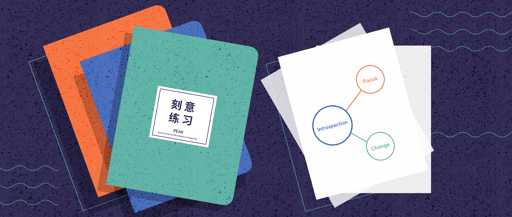

一本记录孩子日常生活的碎碎念，意义不大！
《刻意练习：如何从新手到大师》是由安德斯·艾利克森（Anders Ericsson）和罗伯特·普尔（Robert Pool）合著的一本书。书中主要探讨了通过刻意练习，普通人如何能够实现卓越表现。

1. 书籍评分
🙋♀️ 总结感悟：记录你的阅读感悟！
| 阅读状态 | 书名 | 作者 | 豆瓣评分 | 推荐指数 |
|---|---|---|---|---|
| ✅ | 📓《刻意练习》 | ✍🏼 安德斯·艾利克森/罗伯特·普尔 | 🎟 豆瓣评分：7.8 | 👍🏼👍🏼👍🏼 |
2. 思考总结
记录摘抄：书中很多句子和自己内心的感悟，可以让你明白很多知识边界！
本书的前半部分描述了刻意练习是什么，为什么管用，以及杰出人物如何运用它来发展杰出的能力。本书的最后部分，让我们从对杰出人物的研究中受益，特别是对刻意练习有了深入的了解，并解释了这对我们其他人来说到底意味着什么。而刻意练习是一种有针对性的、系统性的练习方法，旨在提升个人在某一特定领域的技能。它不同于一般的重复练习，更强调质量和方法。
有目的的练习的定义：为任何行业或领域策划和设计训练方法的最佳方式
- 有目的的练习具有四个特征，使得它与所说的“天真的练习”区分开来。所谓“天真的练习”，基本上只是反复地做某件事情，并指望只靠那种反复，就能提高表现和水平。
- 有目的的练习：走出你的舒适区，但要以专注的方式制订明确的目标，为达到那些目标制订一个计划，并且想出监测你的进步的方法。还要想办法保持你的动机。
- 有目的的练习还不够：刻苦努力还不够。逼迫自己超越极限，也不够。人们通常忽略了训练与练习中的其他一些同等重要的方面。学术界对一种特定的练习与训练方法进行了研究，该方法已被证明是提高人们在各个行业或领域中的能力的最强大和最有效的方式，这种方法就是 刻意练习。
有目的练习的四个特点
- 有定义明确的特定目标
- 定义明确的具体目标，可以有效地用于引导你的练习。要把目标分解，并制订一个计划。一个合理的具体目标，但你甚至还得将它进一步分解：学习乐理知识的步骤。怎么做到？可以请一位教练来教你怎样以特定方式改一改你的挥拍动作。诸如此类。关键是接受那个一般目标（并且日渐精进），并将其转化成一些具体目标，使你能达到切合实际的进步的期望。
- 练习时需要集中注意力
- 练习时要全神贯注，避免分心。要想取得进步，必须完全把注意力集中在你的任务上，并非每个人都通过高声叫喊和拍桌子的方式集中注意力。
- 有目的的练习包含反馈
- 一般而言，不论你在努力做什么事情，都需要反馈来准确辨别你在哪些方面还有不足，以及怎么会存在这些不足。如果没有反馈，你不可能搞清楚你在哪些方面还需提高，或者你现在离实现你的目标有多远。需要及时得到有效的反馈，以便不断调整和改进自己的表现。
- 有目的的练习走出舒适区
- 如果你从来不迫使自己走出舒适区，便永远无法进步。试着做不同的事情，而非更难的事情。并非达到极限，而是动机不足。
- 一般来讲，有意义的正面反馈是保持动机的关键要素之一。这种反馈可能是内部反馈，也可能是由其他人提出的外部反馈，对提高自己的水平十分重要。
- 一旦某个人的表现达到了“可接受”的水平，并且可以做到自动化，那么，再多“练习”几年，也不会有什么进步。原因在于，如果没有刻意地去提高，这些自动化的能力会缓慢地退化。
- 有定义明确的特定目标
如何运用刻意练习原则
- 最大限度地运用刻意练习原则
- 如果在你所处的行业或领域之中，刻意练习可以实行，那么，你应当采用刻意练习。如果不是，那就要尽最大的可能应用刻意练习的原则。
- 最佳方法是找到优秀导师
- 不论什么时候，只要有可能，最佳方法几乎总是 找一位优秀的教练或导师。刻意练习与其他类型的有目的的练习在两个重要的方面上存在差别。首先，它需要一个已经得到合理发展的行业或领域，其次，需要一位能够布置练习作业的导师。
- 最大限度地运用刻意练习原则
大脑的适应能力：建立检索结构
- 大脑的适应能力的定义
- 大脑的结构与运行都会为了应对各种不同的心理训练而改变，很大程度上像你的肌肉和心血管系统响应体育锻炼那样。对于刻意练习，我们的目标不仅仅是发掘自己的潜能，而且要构筑它，以便从前不可能做到的事情变得可能做到。
- 大脑适应能力的应用
- 训练可以改变大脑结构：越来越多证据表明，大脑的结构与运行都会为了各种不同的心理训练而改变。而有目的练习刻意训练，既能增强身体能力，又能强化心理能力，使我们可以做一些从未做过的事情。
- 挑战越大变化越大，但不要太过：大脑对于处在舒适区之外却离得并不太远的“甜蜜点”上的挑战，改变最为迅速。
- 训练如何改变大脑需要持续：由训练引起的认知和生理变化需要继续保持。如果停止训练，它们便开始消失。
- 大脑训练达到的目的
- 联系需要 建立检索结构，这样可以避免短时记忆的局限，并马上就能高效地处理大量信息。建立一系列的心理结构，通过运用长时记忆，避开了短时记忆的局限，从而记住更多知识。
- 大脑的适应能力的定义
心理表征：有助于刻意练习
- 心里表征的定义
- 心理表征是一种与我们大脑正在思考的某个物体、某个观点、某些信息或者其他任何事物相对应的心理结构，或具体或抽象。
- 心里表征的重要性
- 心理表征有助于处理信息：理解和解读它，把它保存在记忆之中，组织它、分析它，并用它来决策。
- 心理表征有助于组织信息：对于所有的心理表征，有一点是相同的：尽管短时记忆存在局限，但它们使得人们可以迅速地处理大量信息。
- 心理表征有助于制订计划：心理表征可以用来为很多行业和领域做计划，表征越好，计划就高效。
- 心理表征有助于高效学习：学生之间的差别，在很大程度上最有可能取决于他们能多敏锐地察觉自己所犯的错误，也就是说，他们对音乐作品的心理表征有多么有效。
- 心理表征的发展过程
- 通过对自己的心理表征进行持续的检测和评估，人们可以在必要时调整和优化自己的心理表征，以提高其效率和效果。
- 技能与心理表征之间的关系是一个良性循环：你的技能越娴熟，创建的心理表征就越好；而心理表征越好，就越能有效地练习，以磨炼技能。
- 心里表征的定义
在工作中运用刻意练习原则
- 让练习变成日常工作的一部分
- 第一种错误思想：即认为某人的能力通常受到基因特征的限制。这种思想常常表现为各种各样“我不能”或者“我不是”之类的表述。在任何一个人们选择着重发展的行业或领域之中，人人都可以通过正确的训练来帮助自己大幅度地提高。我们可以塑造自己的潜力。
- 第二种错误思想：如果你足够长时间地做某件事情，一定会更擅长。这种思想错在哪里，我们很清楚。以完全相同的方式一而再再而三地做某件事情，并不是提高绩效和表现的秘诀；它会使人们停下前进的脚步，并且缓慢地下滑。
- 第三种错误思想：要想提高，只需要努力。如果足够刻苦，你会更加优秀。但现实是，所有这些事情，即管理、销售和团队合作，全都是专业化的技能，除非你运用一些专门用于提升那些特定技能的练习方法，否则，即使加倍努力，也无法让你有更大的进步。
- 边干边学
- 好处是，它使人们熟悉练习的习惯，并思考如何练习。一旦他们理解了日常练习的重要性，并意识到可以用练习来实现多大的进步，那么，他们会找机会将其他的日常商业活动转变成练习活动。到最后，练习变成了日常工作的一部分。
- 知识与技能之间的区别
- 知识与技能之间的区别，正是发展专业技能的传统路径与刻意练习的方法之间的核心差别。传统的方法一直是先找出关于正确方法的信息，然后让学生运用那些知识。刻意练习则只聚焦于绩效和表现，以及怎样提高绩效和表现。在专业的或商业的背景中涉及提高绩效和表现时，正确的问题是“我们怎样改进相关的技能”，而不是“我们怎样传授相关的知识”。
- 让练习变成日常工作的一部分
在生活中运用刻意练习原则
- 首先，找位好导师
- 尽管好导师并不一定是世界上最出色的人，但他应当在行业或领域之中有所成就。一般来讲，导师只是能够引导你达到他们或者他们的学生曾经达到过的水平。如果你是一位不折不扣的初学者，那么，只要导师具有足够熟练的技能，对你来说都可以，但如果你已经训练了好几年，那你需要找一位更能干的导师。
- 如何寻找好导师
- 当你自己改变了时，可能需要更换导师。
- 专注和投入至关重要
- 要记住：如果你在走神，或者你很放松，并且只为了好玩，你可能不会进步。而不专注，练习也是没效果的。制订明确的目标，把练习课程的时间缩得更短，是更加迅速地提升新的技能水平的最佳方式。
- 没有导师，怎么办
- 设计有效的联系方法：反复做一件事情，目的是找出你在哪些方面存在不足，并且聚焦于在那些方面取得进步，试着采用不同的方法来提高，直到你最终找到适合自己的方法。
- 将技能分解成一些组成部分，以便反复地练习，并且有效地分析、确定你的不足之处，然后想出各种办法来解决它们。我们只有努力去复制杰出人物的成就，失败了就停下来思考为什么会失败，才能创建有效的心理表征。
- 跨越停滞阶段的方法，可以以新的方式挑战自己。同时，想办法稍微逼自己一下，但不要逼得太狠，这通常会帮助你搞清楚自己的“停滞点”在什么地方，克服攻克特定的弱点。
- 保持动机
- 意志力根本不存在：意志力并非决定我们是否能够继续进行刻意练习的关键，动机才是。动机包含两个组成部分：继续前进的理由和停下脚步的理由。你要保持动机，要么强化继续前行的理由，要么弱化停下脚步的理由。
- 弱化停下脚步的理由：为了弱化停下脚步的理由，可以设定固定的联系时间，避免其他事情的干扰，以及保证足够的睡眠和健康。
- 增强继续前进的倾向：一旦你已经练习了一段时间，并且可以看到结果了，这种技能本身就可以成为你动机的一部分；将对同一件事情感兴趣的所有人聚集起来，或者吸引他们加入一个现有的团体，并且将团体的同志情谊和共同的目标作为达到你自己目标的额外动机；
- 精心设置目标：将漫长的旅程分解成一系列可控的目标，并且每次只关注它们中的一个，甚至可以在每次达到一个目标时，给自己小小的奖励。
- 首先，找位好导师
成为杰出人物的路线图
- 杰出人物成长三阶段
- 第一阶段 产生兴趣：孩子们发展了对某一特定领域或行业的兴趣，那便是：他们觉得棋子好玩，把它们当成玩具，一件玩耍的东西。孩子们发展了简单的技能，例如把国际象棋棋子摆到棋盘上、把篮球投进篮筐、挥舞球拍等。
- 第二阶段 变得认真：一旦未来的杰出人物对某个行业或领域感兴趣了，而且似乎在其中有着美好的发展前景，下一步通常需要到教练或导师那里上课了。学生面临的期望也逐渐升高，直到他们基本上能够尽最大的可能改进为止。
- 第三阶段 全力投入：在某些行业或领域，如音乐表演或芭蕾舞蹈等，刻意练习是必不可少的。在其他领域，如医学、教育和企业管理等，尽管无法进行刻意练习，但仍可以运用刻意练习的原则，指引自己发展在所处行业或领域之中可能的最佳的方法几乎总是找一位优秀的教练或导师。
- 第四阶段 开拓创新：创造性总是保有某种神秘感，因为就其本身而言，创造就是制造出人们尚未见过或体验过的事情。那些有创造性的、不安分的、有进取心的人总是不满足于现状，他们寻找各种办法来向前推进，做一些别人没有做过的事情。
- 成长需要注意的事情
- 父母的重要性：那些日后成为杰出人物的孩子，其父母在孩子的成长和发展阶段中扮演了至关重要的角色。尽管父母和导师可以采用许多方法来激励孩子，但动机必须来自孩子的内心，否则，它不会长久。那些长大后成为才华横溢的艺术家的孩子，有着“自加燃料、自我激励的动机来从事繁重的工作”，尽管他们依然需要父母亲和导师“情绪的和技术的支持”。
- 兄弟姐妹的激励作用：一个孩子看到自己的哥哥或姐姐在从事某项活动，并且获得父亲或母亲的关注和表扬时，自然也想加入进来，获得父母同样的关注和表扬。对某些孩子而言，和兄弟姐妹之间开展竞争，本身也很激励人。
- 杰出人物成长三阶段
- 刻意练习的本质
长时记忆正是区分卓越者与一般人的一个重要能力，它才是刻意练习的指向与本质。刻意练习的任务难度要适中，能收到反馈，有足够的次数重复练习，学习者能够纠正自己的错误。
- 隐性知识
认知复杂度是指你建构“客观”世界的能力。认知复杂度高的人具有高度复杂化的思维能力，更善于同时使用互补与互不相容的概念来理解客观世界。真实世界中，黑白对错并非截然分明。学习科学大量研究表明，成人的最佳学习方式并非独自练习，而是在情境中学习。有效学习是进入相关情境，找到自己的“学习共同体”，学习者最开始时围绕重要成员转，做一些外围的工作，随着技能增长，进入学习共同体圈子的核心，逐步做更重要的工作，最终成为专家。
- 超越 1 万小时定律
真相是，从来不存在 1 万小时定律，它仅仅是畅销书作家对心理科学研究的一次不太严谨的演绎而已。1 万小时定律究竟有哪些问题呢？首先，不同专业领域的技能习得时间与练习时间并不存在一个 1 万小时的最低阈值，比如学习小提琴和医生所需时间就不同。其次，成功与练习时间并不完全成正比，天赋虽然在其中不起决定性作用，却也会是一大影响因子。再次，练习的成果并不与时间呈正相关，这一点，也取决于练习方法。在沙堆悖论的视野下，1 万小时定律的价值也就这样被消解了。正如真实的心理科学研究表明，成为专家的时间往往随着不同的专业技能领域而变化。
- 天才的定义和形成
人们常常将非凡的技艺或才能归因为天赋，认为这些人生来就比被人优秀。研究表明，这些杰出人物的天才，并非天生，而是通过他们的能力和适当的方法培养出来的，而是通过深入的研究和刻苦训练。
- 天才更懂得利用大脑的适应能力
不论基因遗传可能在“天才”取得的成就中发挥着什么作用，他们和我们一样，大脑和身体都具有适应能力，只是比我们更多地利用了那一能力而已。不论在什么行业或领域，提高表现与水平的最有效方法，全都遵循一系列普遍原则。我们把这种通用的方法命名为“刻意练习”。
- 学习新技能的一般方法
一旦你已经达到了这种令你满意的技能水平，而且能做到自然而然地表现出你的水平，无论是开车、打网球还是烘焙饼干，你就已经不再进步了。人们通常错误地理解这种现象，因为他们自以为，继续开车、打网球或烘焙饼干，就是一种形式的练习，如果不停地做下去，自己一定能够更擅长，也许进步较为缓慢，但最终还是会更出色。人们认为，开了 20 多年车的老司机，一定会比只开了 5 年车的司机更擅长开车；行医 20 年的医生，一定会比只行医 5 年的医生更优秀；教了 20 年书的老师，一定会比只教了 5 年书的老师能力更强。
- 有目的的练习是确定的
我们假想的音乐学生如果确定了类似下面这样的练习目标，可能会比他漫无目的的练习要成功得多：“连续三次，不犯任何错误，以适当的速度弹奏完曲子。”如果不制订这样一个目标，就没有办法判断练习是不是成功了。定义明确的具体目标，可以有效地用于引导你的练习。
- 有目的的练习是专注的
如今，并非每个人都通过高声叫喊和拍桌子的方式集中注意力，但史蒂夫的表现说明了我们可以从有效练习的研究中获得一条重要洞见：要想取得进步，必须完全把注意力集中在你的任务上。
- 有目的的练习包含反馈
一般而言，不论你在努力做什么事情，都需要反馈来准确辨别你在哪些方面还有不足，以及怎么会存在这些不足。如果没有反馈（要么是你自己给自己提出的，要么是局外人给你提出的），你不可能搞清楚你在哪些方面还需提高，或者你现在离实现你的目标有多远。
- 有目的的练习需要走出舒适区
对于任何类型的练习，这是一条基本的真理：如果你从来不迫使自己走出舒适区，便永远无法进步。走出舒适区，意味着要试着做一些你以前没做过的事情。有时候，你也许发现，做一些没做过的事情，相对较为容易，然后你会继续逼迫自己。但有时候，你偶然碰到了那些让你感到很难做好的事情，似乎你永远也做不了。想办法去逾越这些障碍，是通向有目的的练习的隐藏钥匙。
- 试着做不同的事情，而非更难的事情
通常情况下，这种解决方案并不是“试着做更难的事情”，而是“试着做不同的事情”。换句话讲，这是一个方法问题。记忆研究中一种常规的模式：首先取得进步，然后到了一个瓶颈，被困住了，寻找不同的方法来克服障碍，最后找到了这种方法，然后又稳定地提高，直到下一个障碍出现。
- 并非达到极限，而是动机不足
在我多年的研究中，并没有找到任何清晰的证据来证明，在任何行业或领域，人们真的会遇到绩效和表现完全不变的极限。相反，我发现，人们通常会在努力提高自己的时候放弃并停下。尽管我们总能继续前进和不断进步，但要想做到，并不见得总是轻而易举。保持专注并继续努力，是很难做到的，而且通常没有趣味。
- 有目的的练习还不够
尽管我们通过专注的训练和走出舒适区，一般能在某种程度上提高自己做某件事的能力，但那并不是全部。刻苦努力还不够。逼迫自己超越极限，也不够。人们通常忽略了训练与练习中的其他一些同等重要的方面。学术界对一种特定的练习与训练方法进行了研究，该方法已被证明是提高人们在各个行业或领域中的能力的最强大和最有效的方式。这种方法就是“刻意练习”，我们会马上进行详尽描述。但首先让我们更加密切地观察，在这种令人称奇的改进背后，到底有着怎样的原因。
- 1 万小时法则的错与对
在任何一个有着悠久历史的行业或领域，要想成就一番事业，致力于变成业内的杰出人物，需要付出许多年艰苦卓绝的努力。也许并不需要恰好 1 万小时的练习，但要花很长时间练习。
- 边学边干
我的基本建议是找寻一种与刻意练习原则相一致的方法，问自己以下这些问题：这种方法，是不是逼着人们走出舒适区，迫使人们尝试做一些对他们来说并不容易的事情？它有没有提供关于绩效和表现的即时反馈，以及关于可以做些什么事情来提高绩效和表现的反馈？那些制订了这种方法的人，有没有辨别出他们所处的特定行业或领域之中的最杰出人物？有没有确定是什么因素将杰出人物与其他人区分开来？训练是不是被设计用来提高行业或领域内的杰出人物所拥有的那些特定技能？如果对所有问题的回答全都是肯定的，尽管也许不能保证那种方法有效，至少可以肯定，它是有效方法的可能性大得多。
- 破解“天才跳高运动员的神迹”
人们希望人生中有这样的奇迹，并非所有的一切都要遵循现实世界中那些古板的、令人厌倦的法则。有时，一些神奇的事情发生了，主人公一夜之间就获得了不可思议的强大力量。你可能不知道，你实际上是在氪星出生的，生下来就会飞。或者，你被一只有辐射的蜘蛛咬过一口，便能飞檐走壁了。或者，你曾暴露在宇宙射线之中，现在，你可以随时隐身了。
3. 个人思考
记录你的思考：记录你的思考过程，记录你的思考感悟！
很早以前就读过这本书了，但是当时确实是不求甚解，挑重点看的，两个多小时就读完了。最近，这本书又看了一遍，确实常看常新，尤其是前几章，特别好。确实是自己之前生活和工作中，又遇到过相同的问题，如果自己好好总结的话，确实也可以得到本文阐述的核心要点。推荐阅读！